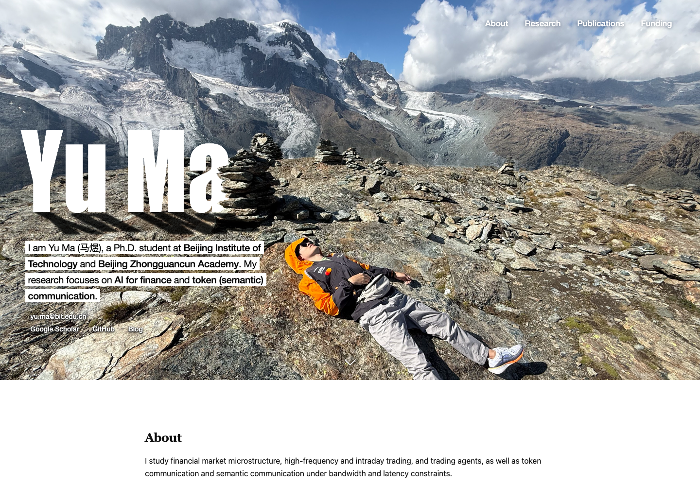

2026-10-18 · 最终上线与v1.0标签等待用户确认
| 检查 | 结果 |
|---|---|
| v0.1生产基线 | 156a92f，标签已推送 |
| 单元与竞态回归 | 57项通过 |
| 视觉 | 6组宽度与合并设计逐像素一致 |
| 搜索与结构化信息 | 8实体、6论文、验证标签及sitemap一致 |
| JavaScript关闭 | 6篇论文仍可读取 |
| 首屏与缩放 | 首屏单次绘制，24次尺寸通知空白间隙0次 |
| 阅读位置 | 前进、后退、刷新、跨页面返回通过 |
正文使用普通HTML供检索工具读取，样式限定作用范围保持原排版。正式构建维持可索引策略，草稿使用noindex响应头。平台实际收录和排名以平台结果为准。
